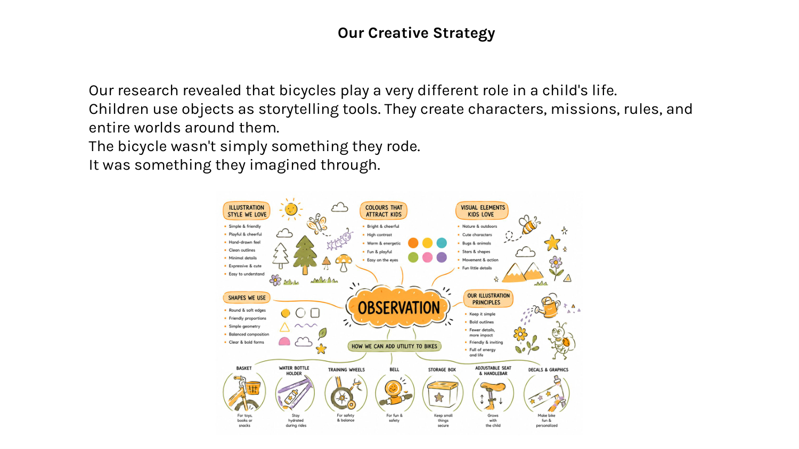

Our research revealed that bicycles play a very different role in a child's life.
Children use objects as storytelling tools. They create characters, missions, rules, and entire worlds around them.
The bicycle wasn't simply something they rode.
It was something they imagined through.
